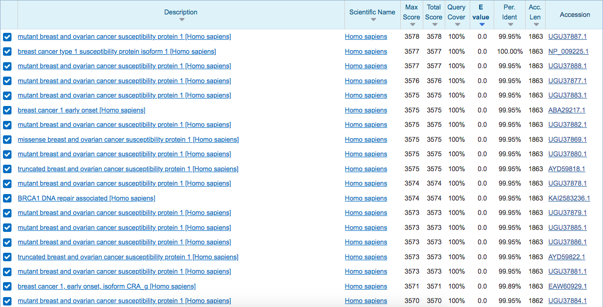
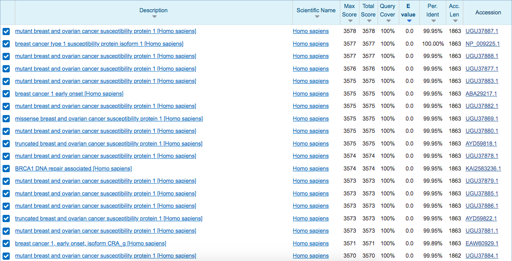
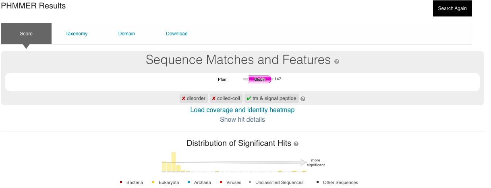

HMMER#
Avtorja: Nuša Kos Thaler, Miha Razdevšek
Datum predstavitve: 2022-04-28
Namen vaje#
Namen vaje je s programom HMMER poiskati homologe izbranih proteinov in rezultate primerjati z rezultati pridobljenimi s programom BLAST. Prav tako pa na podlagi primerjav ugotoviti, v katerih primerih je bolje uporabljati HMMER.
Program#
Program: HMMER 3.3.2
Avtorji programa: S.Eddy (HHMI/Harvard Univeristy), R.Finn (EMBL-EMI)
Reference:
Potter, S.C.; Luciani, A.; Park, S.R. Eddy Y.; Lopez, R. and Finn, R.D.;(2018) HMMER web server: 2018 update. Nucleic Acids Research Web Server Issue 46:W200-W204. 10.1093/nar/gky448
Finn, R. D.; Clements, J. and Eddy S. R.; (2011) HMMER web server: interactive sequence similarity searching. Nucleic Acids Research Web Server Issue 39:W29–W37. 10.1093/nar/gkr367
Opis programa#
HMMER je sestavljen iz več programov, ki nam omogočajo poravnavo bioloških zaporedij in iskanje homologov po podatkovnih zbirkah. Uporablja verjetnostni model imenovan profil skritih modelov Markova (Hidden Markov models, HMM). Gre za to, da imamo več možnih stanj sistema (x), ki nam niso poznana (skrita). Poznane so nam pa posledice oz. opažanja, ki so odvisna od skritih stanj. Pomembno je tudi, da je stanje x(n) odvisno samo od stanja x(n-1). Vsi prehodi med stanji in prehodi iz stanj do opažanj imajo neko verjetnost. Algoritem nam na podlagi teh verjetnosti izračuna vsa možna stanja in jih uredi po padajoči verjetnosti. Prednost programa je, da z njim lahko napovemo in poravnamo oddaljene homologe našega proteina.
Program HMMER ima več opcij, ki nam lahko pomagajo pri iskanju homologov. Omočoga tako iskanje homologov posameznih nukleotidnih (nhmmer) in proteinskih (phmmer, jackhmmer) zaporedij z bazami podatkov nukleotidnih in proteinskih zaporedij, kot tudi iskanje homologov pri poravnavah več zaporedij (hmmbuild, hmmalign). V tem seminarju se bova osredotočila na phmmer, kjer proteinsko zaporedje primerjamo z bazo podatkov proteinskih zaporedij.
Podoben program, ki smo ga že spoznali je BLAST. Ta za poravnave uporablja pozicijsko neodvisne substitucijske matrike kot sta BLOSUM in PAM. HMM profil je nadgradnja pozicijsko specifičnih točkovalnih matrik, posebej v smislu pozicijske odvisnosti poravnave vrzeli in insercij. V ozadju programa HMMER se sestavi profil – poravnava večih zaporedij (npr. neke domene proteinske družine). HMMER torej iz našega zaporedja ustvari profil, tako da vrednosti ustrezne matrike (npr. BLOSUM62) spremeni v verjetnosti in doda verjetnost za insercijo ali vrzel. Na podlagi tega nam vrne proteine, ki so našemu zaporedju najbolj podobni.
Vhodni podatki#
Kot vhodne podatke lahko uporabimo:
FASTA format zaporedja proteina
enočrkovno aminokislinsko zaporedje
datoteko, ki vsebuje aminokislinsko zaporedje
kodo za dostop do določenega proteina (accession code)
Navodila#
Vhodni podatki#
Kot vhodne podatke uporabite:
Postopek dela#
Odpremo phmmer.
V okno kjer piše Enter your sequence vstavimo naše aminokislinsko zaporedje.
Pustimo privzeto bazo podatkov (Reference Proteomes).
Significance E-values (sequence) nastavimo na 0,01. To vrednost avtorji pograma smatrajo kot ustrezno za določanje homologov.
Uporabimo matriko zamenjav BLOSUM62. Če iščemo oddaljene homologe (pričakujemo da bodo ta zaporedja bolj različna), lahko spremenimo privzeto matriko zamenjav s tem da vzamemo matriko BLOSUM z nižjo vrednostjo ali matriko PAM z višjo vrednostjo. To storimo tako, da izberemo Advanced in v segmentu Substitution scoring matrix označimo željeno matriko.
Pričakovani rezultati in razlaga#
Program nam poda 3 razdelke: score, taxonomy in domain. V razdelku socre so prikazane najdene domene proteina (s pomočjo podatkovne zbirke Pfam), značilnosti zaporedja (npr. transmembranska regija, signalni peptid), distribucijo zadetkov glede na e-vrednosti in kraljestva organizmov ter ujemanja zaporedij po naraščujočih e-vrednostih. Tukaj lahko s pomočjo klika na customize dodamo dodatne parametre, ki želimo da nam jih program izpiše v tabeli (npr. descrpiton - opis zaporedja). V razdelku taxonomy se nam izriše taksonomsko drevo in pa porazdelitev zadetkov znotraj vrste. V razdelku domain pa se prikažejo najdene domene proteina in pri katerih najdenih zaporedjih se tudi pojavljajo.
Pri proteinu BRCA1 bi pričakovani rezultati morali biti podobni rezultatom prikazanim na spodnjih slikah:

 Rezultati programa blastp:

Rezultati programa blastp:

Opazimo, da so rezultati phmmer in blastp enaki. Zadetki se ujemajo s tistimi zapisanimi v UniProt v segemntu Similar proteins. E-vrednosti poravnav z veliko količino proteinov so enake 0. Kaj to pomeni? Namig: Protein BRCA1 sodeluje pri popravljanih mehanizmih DNA.
Za protein mioglobin organizma Aplysia limacina dobimo naslednje rezultate (posnetek zaslona strani 12):

 Rezultati programa blastp:
Rezultati programa blastp:

V tem primeru se razltati med phmmer in blastp razlikujejo, prav tako pa je zadetkov pri programu phmmer veliko več. Zadetkov je tudi veliko več kot je prikazanih podobnih proteinov v UniProt-u.
Kljub temu, da program lahko najde oddaljene homologe naših zaporedij, se pa lahko zgodi, da nekateri med izpisanimi proteini niso homologi našega proteina.